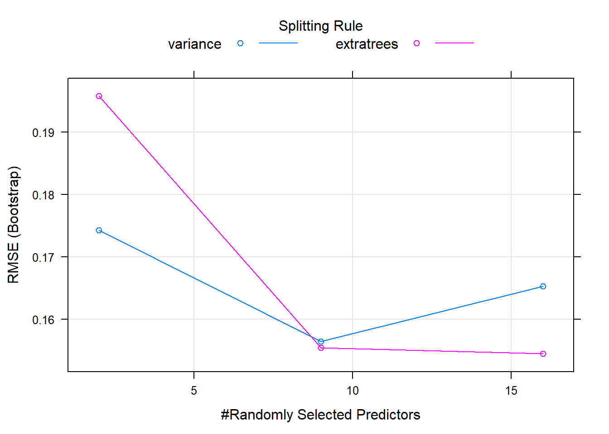
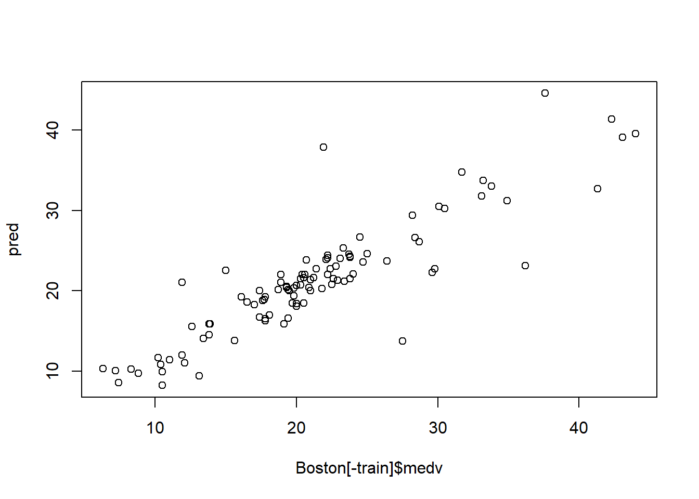
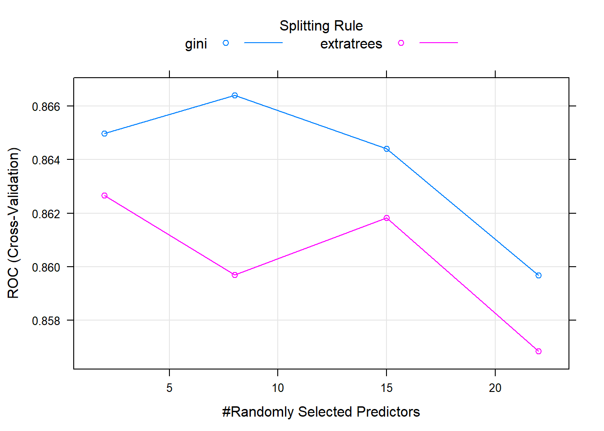

Chapter 25 Maching Learning with Caret
The caret package (short for Classification And REgression Training) contains functions to streamline the model training process for complex regression and classification problems. It integrates all activities related to model development in a streamlined workflow for nearly every major ML algorithm available in R.
In particular, we will use random forest algorithm through caret for prediction.
library(data.table)
library(leaps)
library(rpart) # build decision tree
library(rattle) # plot decision tree
library(ranger) # random forest
library(caret)
library(stringr)A random forest is a machine learning technique that’s used to solve regression and classification problems. It utilizes ensemble learning, which is a technique that combines many classifiers to provide solutions to complex problems. In a simple non-technique terms, the random forest algorithm builds multiple decision trees with different structures. Each tree has its own prediction. The final prediction is to aggregate the decision from all trees.
For binary outcome, the aggregation is done through majority vote; For continuous outcome, the aggregation is through averaging.
25.1 Random Forest
Use random forest algorithm to predict house price
Boston=fread("data/Boston.csv")
Boston[,location:=factor(location)]
Boston[,chas:=factor(chas)]
nrow(Boston) # check the number of rows## [1] 506# set the rand seed to ensure replicability
set.seed(1)
# set the size of training set
train_size=round(0.8*nrow(Boston),0)
# randomly select 405 numbers from sequence of 1 to 506
train=sample(1:nrow(Boston), train_size, replace=FALSE)
model1 <- train(
log(medv)~.,
Boston[train],
method = "ranger"
)
plot(model1)
pred = exp(predict(model1, Boston[-train]))
error = pred - Boston[-train]$medv
# Calculate RMSE
rmse= sqrt(mean(error ^ 2))
# Mean Absolute Error
mae=mean(abs(Boston[-train]$medv-pred))
# Mean Absolute Percent Error
mape=mean(abs(Boston[-train]$medv-pred)/Boston[-train]$medv)
c(rmse,mae, mape)## [1] 3.5733190 2.2802331 0.1166085
Use random forest algorithm to predict survival of titanic passengers
train <- fread('data/titanic/train.csv')
test <- fread("data/titanic/test.csv")
full=rbind(train, test, fill=TRUE)
head(full)## PassengerId Survived Pclass
## 1: 1 0 3
## 2: 2 1 1
## 3: 3 1 3
## 4: 4 1 1
## 5: 5 0 3
## 6: 6 0 3
## Name Sex Age SibSp Parch
## 1: Braund, Mr. Owen Harris male 22 1 0
## 2: Cumings, Mrs. John Bradley (Florence Briggs Thayer) female 38 1 0
## 3: Heikkinen, Miss. Laina female 26 0 0
## 4: Futrelle, Mrs. Jacques Heath (Lily May Peel) female 35 1 0
## 5: Allen, Mr. William Henry male 35 0 0
## 6: Moran, Mr. James male NA 0 0
## Ticket Fare Cabin Embarked
## 1: A/5 21171 7.2500 S
## 2: PC 17599 71.2833 C85 C
## 3: STON/O2. 3101282 7.9250 S
## 4: 113803 53.1000 C123 S
## 5: 373450 8.0500 S
## 6: 330877 8.4583 Q##
## C Q S
## 2 270 123 914full[Embarked=="", Embarked:="S"] # replace missing Embarked with the most frequent value
## examine the cabin information
table(full$Cabin)##
## A10 A11 A14 A16
## 1014 1 1 1 1
## A18 A19 A20 A21 A23
## 1 1 1 1 1
## A24 A26 A29 A31 A32
## 1 1 1 1 1
## A34 A36 A5 A6 A7
## 3 1 1 1 1
## A9 B10 B101 B102 B11
## 1 1 1 1 1
## B18 B19 B20 B22 B24
## 2 1 2 2 1
## B26 B28 B3 B30 B35
## 1 2 1 1 2
## B36 B37 B38 B39 B4
## 1 1 1 1 1
## B41 B42 B45 B49 B5
## 2 1 2 2 2
## B50 B51 B53 B55 B52 B54 B56 B57 B59 B63 B66 B58 B60
## 1 3 1 5 3
## B61 B69 B71 B73 B77
## 1 2 2 1 2
## B78 B79 B80 B82 B84 B86
## 2 1 1 1 1
## B94 B96 B98 C101 C103 C104
## 1 4 3 1 1
## C105 C106 C110 C111 C116
## 1 2 1 1 2
## C118 C123 C124 C125 C126
## 1 2 2 2 2
## C128 C130 C132 C148 C2
## 1 1 1 1 2
## C22 C26 C23 C25 C27 C28 C30 C31
## 4 6 1 1 2
## C32 C39 C45 C46 C47
## 2 1 1 2 1
## C49 C50 C51 C52 C53
## 1 1 1 2 1
## C54 C55 C57 C6 C62 C64 C65
## 2 2 2 2 2
## C68 C7 C70 C78 C80
## 2 2 1 4 2
## C82 C83 C85 C86 C87
## 1 2 2 2 1
## C89 C90 C91 C92 C93
## 2 1 1 2 2
## C95 C97 C99 D D10 D12
## 1 1 1 4 2
## D11 D15 D17 D19 D20
## 1 2 2 2 2
## D21 D22 D26 D28 D30
## 2 1 2 2 2
## D33 D34 D35 D36 D37
## 2 1 2 2 2
## D38 D40 D43 D45 D46
## 1 1 1 1 1
## D47 D48 D49 D50 D56
## 1 1 1 1 1
## D6 D7 D9 E10 E101
## 1 1 1 1 3
## E12 E121 E17 E24 E25
## 1 2 1 2 2
## E31 E33 E34 E36 E38
## 2 2 3 1 1
## E39 E41 E40 E44 E45 E46
## 1 1 2 1 2
## E49 E50 E52 E58 E60
## 1 2 1 1 1
## E63 E67 E68 E77 E8
## 1 2 1 1 2
## F F E46 F E57 F E69 F G63
## 1 1 1 1 2
## F G73 F2 F33 F38 F4
## 2 4 4 1 4
## G6 T
## 5 1full[Cabin=="",Cabin:="N"] # if Cabin is missing, replace with N
full[,Cabin:=str_extract(Cabin,"[:alpha:]")] # extract the first letter of Cabin number
full[Cabin%in%c("G","T"),Cabin:="N"] # Cabin G and T do not have enough observation and reset to "N"
table(full$Cabin)##
## A B C D E F N
## 22 65 94 46 41 21 1020## PassengerId Survived Pclass Name
## Min. : 1 Min. :0.0000 Min. :1.000 Length:1309
## 1st Qu.: 328 1st Qu.:0.0000 1st Qu.:2.000 Class :character
## Median : 655 Median :0.0000 Median :3.000 Mode :character
## Mean : 655 Mean :0.3838 Mean :2.295
## 3rd Qu.: 982 3rd Qu.:1.0000 3rd Qu.:3.000
## Max. :1309 Max. :1.0000 Max. :3.000
## NA's :418
## Sex Age SibSp Parch
## Length:1309 Min. : 0.17 Min. :0.0000 Min. :0.000
## Class :character 1st Qu.:21.00 1st Qu.:0.0000 1st Qu.:0.000
## Mode :character Median :28.00 Median :0.0000 Median :0.000
## Mean :29.88 Mean :0.4989 Mean :0.385
## 3rd Qu.:39.00 3rd Qu.:1.0000 3rd Qu.:0.000
## Max. :80.00 Max. :8.0000 Max. :9.000
## NA's :263
## Ticket Fare Cabin Embarked
## Length:1309 Min. : 0.000 Length:1309 Length:1309
## Class :character 1st Qu.: 7.896 Class :character Class :character
## Mode :character Median : 14.454 Mode :character Mode :character
## Mean : 33.295
## 3rd Qu.: 31.275
## Max. :512.329
## NA's :1# We have a lot of missing data in the Age feature (263/1309)
# examine rows with missing age
full[is.na(Age)] %>% head()## PassengerId Survived Pclass Name Sex Age SibSp
## 1: 6 0 3 Moran, Mr. James male NA 0
## 2: 18 1 2 Williams, Mr. Charles Eugene male NA 0
## 3: 20 1 3 Masselmani, Mrs. Fatima female NA 0
## 4: 27 0 3 Emir, Mr. Farred Chehab male NA 0
## 5: 29 1 3 O'Dwyer, Miss. Ellen ""Nellie"" female NA 0
## 6: 30 0 3 Todoroff, Mr. Lalio male NA 0
## Parch Ticket Fare Cabin Embarked
## 1: 0 330877 8.4583 N Q
## 2: 0 244373 13.0000 N S
## 3: 0 2649 7.2250 N C
## 4: 0 2631 7.2250 N C
## 5: 0 330959 7.8792 N Q
## 6: 0 349216 7.8958 N Sfull=full[, Age2:=mean(Age,na.rm=TRUE)][is.na(Age), Age:=Age2][,-c("Age2")] # replace missing age with average
# replace missing fare with average fare
full[is.na(Fare)]## PassengerId Survived Pclass Name Sex Age SibSp Parch Ticket
## 1: 1044 NA 3 Storey, Mr. Thomas male 60.5 0 0 3701
## Fare Cabin Embarked
## 1: NA N Sfull=full[, Fare2:=mean(Fare,na.rm=TRUE)][is.na(Fare), Fare:=Fare2][,-c("Fare2")]
# The title of the passenger can affect his survive:
# extract title
full[,Title := gsub('(.*, )|(\\..*)', '', Name)]
full[Title %in% c('Mlle','Ms','Mme','Lady','Dona'), Title:= 'Miss']
full[Title %in% c('Capt','Col','Don','Dr','Jonkheer','Major','Rev','Sir','the Countess'), Title:= 'Officer']
# Let's see how many unique levels for each variables
apply(full,2, function(x) length(unique(x)))## PassengerId Survived Pclass Name Sex Age
## 1309 3 3 1307 2 99
## SibSp Parch Ticket Fare Cabin Embarked
## 7 8 929 282 7 3
## Title
## 5##
## 0 1 2 3 4 5 6 9
## 1002 170 113 8 6 6 2 2##
## 0 1 2 3 4 5 8
## 891 319 42 20 22 6 9full[,Parch2:=ifelse(Parch>2,3,Parch), by=.(PassengerId)]
full[,SibSp2:=ifelse(SibSp>4,4,SibSp), by=.(PassengerId)]
# Let's move the features Survived, Pclass, Sex, Embarked to be factors
cols<-c("Pclass","Sex","Embarked","Title","Cabin","SibSp2","Parch2")
full[,(cols):=lapply(.SD, as.factor),.SDcols=cols]
full[,Survived:=factor(Survived,levels=c(0,1), labels = c("D","S"))]
summary(full)## PassengerId Survived Pclass Name Sex
## Min. : 1 D :549 1:323 Length:1309 female:466
## 1st Qu.: 328 S :342 2:277 Class :character male :843
## Median : 655 NA's:418 3:709 Mode :character
## Mean : 655
## 3rd Qu.: 982
## Max. :1309
##
## Age SibSp Parch Ticket
## Min. : 0.17 Min. :0.0000 Min. :0.000 Length:1309
## 1st Qu.:22.00 1st Qu.:0.0000 1st Qu.:0.000 Class :character
## Median :29.88 Median :0.0000 Median :0.000 Mode :character
## Mean :29.88 Mean :0.4989 Mean :0.385
## 3rd Qu.:35.00 3rd Qu.:1.0000 3rd Qu.:0.000
## Max. :80.00 Max. :8.0000 Max. :9.000
##
## Fare Cabin Embarked Title Parch2 SibSp2
## Min. : 0.000 A: 22 C:270 Master : 61 0:1002 0:891
## 1st Qu.: 7.896 B: 65 Q:123 Miss :267 1: 170 1:319
## Median : 14.454 C: 94 S:916 Mr :757 2: 113 2: 42
## Mean : 33.295 D: 46 Mrs :197 3: 24 3: 20
## 3rd Qu.: 31.275 E: 41 Officer: 27 4: 37
## Max. :512.329 F: 21
## N:102025.2 Random Forest
LT=nrow(train)
LT2=nrow(full)
formula=Survived~ Pclass+Sex+Age+Fare+Cabin+Title+SibSp2+Parch2
# Create trainControl object: myControl
myControl <- trainControl(
method = "cv",
number = 5,
summaryFunction = twoClassSummary,
classProbs = TRUE, # IMPORTANT!
verboseIter = TRUE
)
# Train glm with custom trainControl: model
model <- train(
formula,
tuneLength = 4,
full[1:LT],
method = "ranger",
trControl = myControl
)## Warning in train.default(x, y, weights = w, ...): The metric "Accuracy" was not
## in the result set. ROC will be used instead.## + Fold1: mtry= 2, min.node.size=1, splitrule=gini
## - Fold1: mtry= 2, min.node.size=1, splitrule=gini
## + Fold1: mtry= 8, min.node.size=1, splitrule=gini
## - Fold1: mtry= 8, min.node.size=1, splitrule=gini
## + Fold1: mtry=15, min.node.size=1, splitrule=gini
## - Fold1: mtry=15, min.node.size=1, splitrule=gini
## + Fold1: mtry=22, min.node.size=1, splitrule=gini
## - Fold1: mtry=22, min.node.size=1, splitrule=gini
## + Fold1: mtry= 2, min.node.size=1, splitrule=extratrees
## - Fold1: mtry= 2, min.node.size=1, splitrule=extratrees
## + Fold1: mtry= 8, min.node.size=1, splitrule=extratrees
## - Fold1: mtry= 8, min.node.size=1, splitrule=extratrees
## + Fold1: mtry=15, min.node.size=1, splitrule=extratrees
## - Fold1: mtry=15, min.node.size=1, splitrule=extratrees
## + Fold1: mtry=22, min.node.size=1, splitrule=extratrees
## - Fold1: mtry=22, min.node.size=1, splitrule=extratrees
## + Fold2: mtry= 2, min.node.size=1, splitrule=gini
## - Fold2: mtry= 2, min.node.size=1, splitrule=gini
## + Fold2: mtry= 8, min.node.size=1, splitrule=gini
## - Fold2: mtry= 8, min.node.size=1, splitrule=gini
## + Fold2: mtry=15, min.node.size=1, splitrule=gini
## - Fold2: mtry=15, min.node.size=1, splitrule=gini
## + Fold2: mtry=22, min.node.size=1, splitrule=gini
## - Fold2: mtry=22, min.node.size=1, splitrule=gini
## + Fold2: mtry= 2, min.node.size=1, splitrule=extratrees
## - Fold2: mtry= 2, min.node.size=1, splitrule=extratrees
## + Fold2: mtry= 8, min.node.size=1, splitrule=extratrees
## - Fold2: mtry= 8, min.node.size=1, splitrule=extratrees
## + Fold2: mtry=15, min.node.size=1, splitrule=extratrees
## - Fold2: mtry=15, min.node.size=1, splitrule=extratrees
## + Fold2: mtry=22, min.node.size=1, splitrule=extratrees
## - Fold2: mtry=22, min.node.size=1, splitrule=extratrees
## + Fold3: mtry= 2, min.node.size=1, splitrule=gini
## - Fold3: mtry= 2, min.node.size=1, splitrule=gini
## + Fold3: mtry= 8, min.node.size=1, splitrule=gini
## - Fold3: mtry= 8, min.node.size=1, splitrule=gini
## + Fold3: mtry=15, min.node.size=1, splitrule=gini
## - Fold3: mtry=15, min.node.size=1, splitrule=gini
## + Fold3: mtry=22, min.node.size=1, splitrule=gini
## - Fold3: mtry=22, min.node.size=1, splitrule=gini
## + Fold3: mtry= 2, min.node.size=1, splitrule=extratrees
## - Fold3: mtry= 2, min.node.size=1, splitrule=extratrees
## + Fold3: mtry= 8, min.node.size=1, splitrule=extratrees
## - Fold3: mtry= 8, min.node.size=1, splitrule=extratrees
## + Fold3: mtry=15, min.node.size=1, splitrule=extratrees
## - Fold3: mtry=15, min.node.size=1, splitrule=extratrees
## + Fold3: mtry=22, min.node.size=1, splitrule=extratrees
## - Fold3: mtry=22, min.node.size=1, splitrule=extratrees
## + Fold4: mtry= 2, min.node.size=1, splitrule=gini
## - Fold4: mtry= 2, min.node.size=1, splitrule=gini
## + Fold4: mtry= 8, min.node.size=1, splitrule=gini
## - Fold4: mtry= 8, min.node.size=1, splitrule=gini
## + Fold4: mtry=15, min.node.size=1, splitrule=gini
## - Fold4: mtry=15, min.node.size=1, splitrule=gini
## + Fold4: mtry=22, min.node.size=1, splitrule=gini
## - Fold4: mtry=22, min.node.size=1, splitrule=gini
## + Fold4: mtry= 2, min.node.size=1, splitrule=extratrees
## - Fold4: mtry= 2, min.node.size=1, splitrule=extratrees
## + Fold4: mtry= 8, min.node.size=1, splitrule=extratrees
## - Fold4: mtry= 8, min.node.size=1, splitrule=extratrees
## + Fold4: mtry=15, min.node.size=1, splitrule=extratrees
## - Fold4: mtry=15, min.node.size=1, splitrule=extratrees
## + Fold4: mtry=22, min.node.size=1, splitrule=extratrees
## - Fold4: mtry=22, min.node.size=1, splitrule=extratrees
## + Fold5: mtry= 2, min.node.size=1, splitrule=gini
## - Fold5: mtry= 2, min.node.size=1, splitrule=gini
## + Fold5: mtry= 8, min.node.size=1, splitrule=gini
## - Fold5: mtry= 8, min.node.size=1, splitrule=gini
## + Fold5: mtry=15, min.node.size=1, splitrule=gini
## - Fold5: mtry=15, min.node.size=1, splitrule=gini
## + Fold5: mtry=22, min.node.size=1, splitrule=gini
## - Fold5: mtry=22, min.node.size=1, splitrule=gini
## + Fold5: mtry= 2, min.node.size=1, splitrule=extratrees
## - Fold5: mtry= 2, min.node.size=1, splitrule=extratrees
## + Fold5: mtry= 8, min.node.size=1, splitrule=extratrees
## - Fold5: mtry= 8, min.node.size=1, splitrule=extratrees
## + Fold5: mtry=15, min.node.size=1, splitrule=extratrees
## - Fold5: mtry=15, min.node.size=1, splitrule=extratrees
## + Fold5: mtry=22, min.node.size=1, splitrule=extratrees
## - Fold5: mtry=22, min.node.size=1, splitrule=extratrees
## Aggregating results
## Selecting tuning parameters
## Fitting mtry = 8, splitrule = gini, min.node.size = 1 on full training set
# in-sample prediction
p=predict(model, full, type = "prob")
p_survival=ifelse(p$S>0.5, 1, 0)
# Create confusion matrix
confusionMatrix(factor(p_survival[1:LT]),factor(train$Survived))## Confusion Matrix and Statistics
##
## Reference
## Prediction 0 1
## 0 536 39
## 1 13 303
##
## Accuracy : 0.9416
## 95% CI : (0.9242, 0.9561)
## No Information Rate : 0.6162
## P-Value [Acc > NIR] : < 2.2e-16
##
## Kappa : 0.8748
##
## Mcnemar's Test P-Value : 0.0005265
##
## Sensitivity : 0.9763
## Specificity : 0.8860
## Pos Pred Value : 0.9322
## Neg Pred Value : 0.9589
## Prevalence : 0.6162
## Detection Rate : 0.6016
## Detection Prevalence : 0.6453
## Balanced Accuracy : 0.9311
##
## 'Positive' Class : 0
## # sensitivity: correct negative
# Specificity: correct positive rate
# out-of-sample prediction
submission=data.frame(PassengerId=test$PassengerId, Survived=p_survival[(LT+1):LT2])
fwrite(submission,"data/titanic/submission.csv")The overall in-sample prediction accuracy is 94.2%, meaning our prediction in 94.2% cases are correct. The accuracy should be broken into two additional measures: sensitivity and specificity.
- Sensitivity is the metric that evaluates a model’s ability to predict true positives of each available category. In our case, we predict 97.45% of the death (the case of 0).
- Specificity: the proportion of observed negatives that were predicted to be negatives. In our case, we predict 88.89% of the survival (the case of 1).
Now, we can submit the prediction to kaggle and our score is 0.75837, which is ranked 47668. In order to improve the ranking, there are typically two ways:
- feature engineering: preprocess the column in the model
- try a different prediction model.
You will learn more predictive model in more advanced classes.